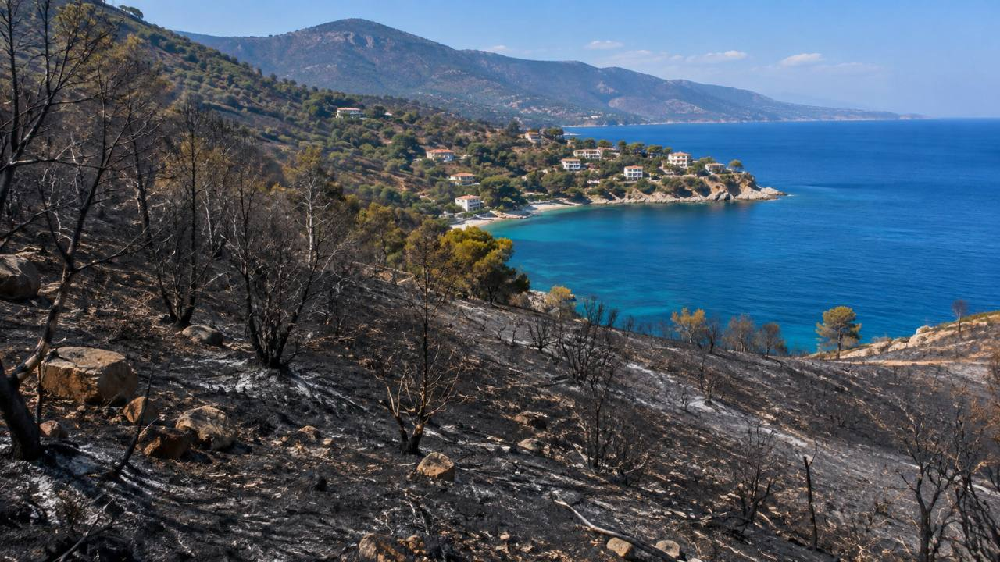
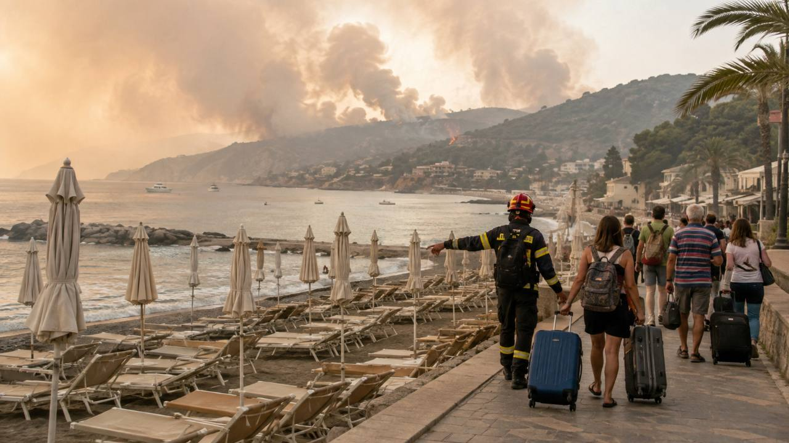
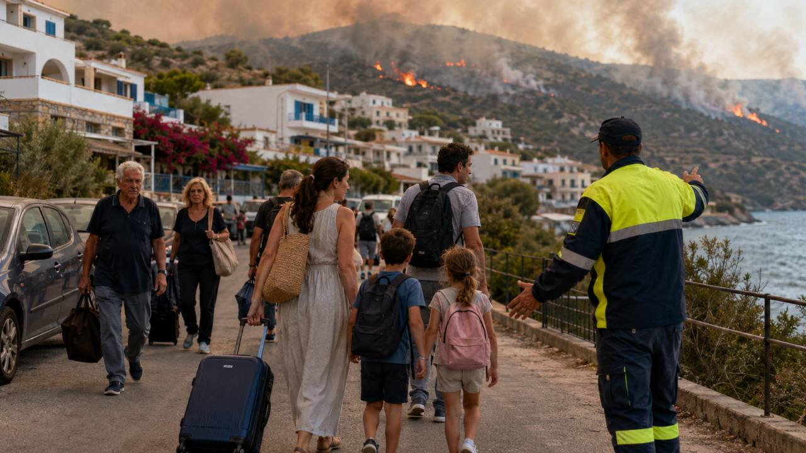
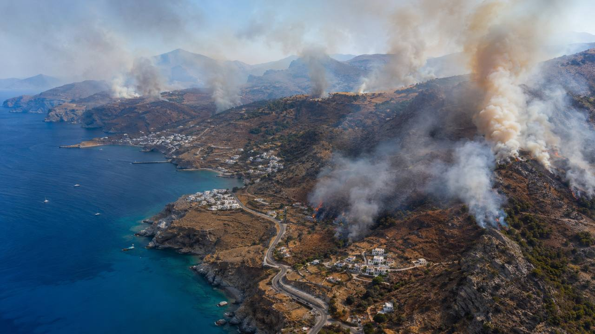

Požiare už nie sú iba správou o spálenom lese. V turistických oblastiach prinášajú evakuácie hotelov, pláží a kempov, presuny ľudí po mori, uzávery ciest a situácie, keď sa návštevníci nemôžu vrátiť po doklady či batožinu.
Sezóna 2026 v najdôležitejších číslach
Pri najtragickejších udalostiach v Španielsku a Grécku zahynulo najmenej 19 ľudí: 14 obetí si vyžiadal požiar Los Gallardos v provincii Almería a ďalšie obete zahynuli pri zásahoch v Grécku vrátane kolízie hasiacich vrtuľníkov pri Psathe. Bilancia sa môže meniť podľa výsledkov vyšetrovania a zdravotného stavu zranených.
- na Kréte sa evakuácie dotkli približne 2 000 turistov podľa humanitárnych odhadov,
- medzi Peschici a Vieste na talianskom Gargane bolo evakuovaných približne 400 turistov a návštevníkov, časť po mori,
- v tureckom Milase bolo preventívne evakuovaných viac než 1 100 ľudí z hotelov a dovolenkových rezidencií,
- v Castellóne zostávali koncom júla tisíce ľudí mimo domov; dostupné údaje nerozlišujú turistov a miestnych obyvateľov.
Almería: najtragickejší požiar sezóny
Požiar pri Los Gallardos a Bédare vznikol 9. júla. Následne zasiahol rozsiahle územie na juhovýchode Španielska; konečné odhady zasiahnutej plochy sa v jednotlivých správach líšia. Oheň urýchlili vietor, sucho, horúčava a členitý terén. Medzi obeťami boli aj zahraniční rezidenti, čo nie je to isté ako turisti.
Pre cestovateľov z toho vyplýva dôležité poučenie: pri evakuácii netreba hľadať vlastnú skratku autom. Najbezpečnejšie je riadiť sa konkrétnou trasou polície alebo civilnej ochrany.

Kréta a západná Attika: evakuácie aj rizikový letecký zásah
Požiar pri Rethymne na Kréte zasiahol vnútrozemie aj pobrežné oblasti. Hasiči a pobrežná stráž pripravili aj evakuáciu po mori; podľa správ boli na zásah nasadené hliadkové lode a súkromné plavidlá. Pri gréckych požiaroch zahynuli hasiči, medzi nimi dvaja pri zásahu na Kréte.
Pri Psathe západne od Atén sa 2. augusta počas hasenia zrazili dva vrtuľníky. Pri havárii jedného stroja zahynuli grécky koordinátor a dánsky pilot. Príčina požiaru aj okolnosti zásahu zostávajú predmetom vyšetrovania.

Taliansky Gargano: turisti odchádzali aj loďami
Požiar medzi Peschici a Vieste zasiahol borovicové lesy a stredomorskú vegetáciu pri plážach, kempoch a dovolenkových osadách. Približne 400 ľudí sa presunulo do Vieste; asi stovku odviezli lode pobrežnej stráže a finančnej polície, ďalší využili autobusy či autá. Miestne úrady uviedli približne 150 hektárov zničenej vegetácie a turistické organizácie hovorili o hospodárskych škodách.
Francúzsko, Španielsko a Turecko
Požiar vo francúzskom departemente Var sa po zmene vetra opäť rozšíril a v noci si vyžiadal evakuácie. V Castellóne zasiahol požiar Sierra de Espadán a úrady postupne povoľovali návrat časti evakuovaných. Pri tureckom Milase v provincii Muğla boli preventívne evakuované hotely a dovolenkové rezidencie; požiar bol po rozsiahlom zásahu do veľkej miery pod kontrolou.

Koľko územia už zhorelo?
Údaje systému EFFIS ukazujú výrazné rozdiely medzi krajinami a týkajú sa celých štátov, nie iba stredomorského pobrežia. EFFIS zároveň mapuje najmä väčšie požiare, preto sa nemusia objaviť všetky menšie lokálne udalosti. Pri porovnávaní sezón treba kontrolovať dátum aktualizácie dashboardu, nie len konečné ročné hodnoty.
Prečo vznikajú požiare a čo to znamená pre turistov
Horúčava väčšinou nevytvorí prvotnú iskru. Európska environmentálna agentúra dlhodobo upozorňuje, že veľká väčšina požiarov súvisí priamo alebo nepriamo s ľudskou činnosťou: poškodeným vedením, strojmi vytvárajúcimi iskry, spaľovaním odpadu, nedohaseným ohňom, cigaretou alebo úmyselným založením. Sucho a vietor potom určujú, ako rýchlo sa situácia zhorší.
Hlavné letiská a väčšina hotelov v Grécku, Taliansku či Španielsku často fungujú normálne. Problém však môže vzniknúť na posledných kilometroch medzi letiskom a ubytovaním – pri uzavretej ceste, dyme alebo evakuácii konkrétnej obce.

Čo robiť pri výstrahe alebo evakuácii
- okamžite nasledujte pokyny úradov a systém civilnej ochrany,
- nepoužívajte neoverenú skratku ani vlastnú únikovú trasu,
- vezmite doklady, lieky, telefón, nabíjačku a vodu,
- kontrolujte miestne upozornenia 112 a kontakty ubytovania,
- nespoliehajte sa iba na informácie leteckej spoločnosti.
Najväčším rizikom nie je jeden požiar v celej krajine, ale lokálny oheň blízko hotela, pláže alebo prístupovej cesty. To samo osebe neznamená, že treba rušiť dovolenku v celom Stredomorí. Znamená to sledovať konkrétnu obec, ostrov a trasu k ubytovaniu.
Zdroje a metodika
Článok vychádza z priebežných správ Associated Press, talianskych agentúr ANSA, systému EFFIS a oznámení civilnej ochrany. Čísla sa môžu s pokračujúcou sezónou meniť. Ilustrácie v článku sú vizualizácie a nie sú spravodajskými fotografiami.